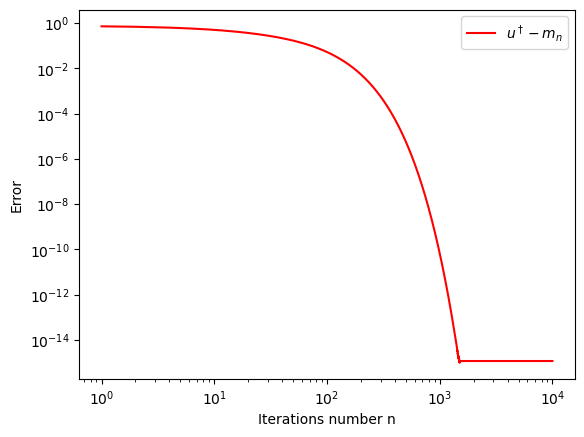

import numpy as np
import functools
import matplotlib.pyplot as plt
from functools import partial18 Example 1: One-dimensional EKI
We implement here the original, iterative ensemble Kalman filter as formulated in (Iglesias, Law, and Stuart 2013).
Recall the inverse problem: recover the unknown \(u\) from noisy measurements \(y\) related by
\[ y = \mathcal{G}(u) + \eta, \] where the noise \(\eta \sim \mathcal{N}(0, \Gamma).\)
Start by introducing a pseudo time, \(h = 1/N,\) and then propagate an ensemble \(\{ u_n^{(j)}\}\) of \(J\) particles (ensemble members) from “time” \(nh\) to \((n+1)h\) according to
\[ u_{n+1}^{(j)} = u_n^{(j)} + C^{up}(u_n) \left[ C^{pp}(u_n) + \frac{1}{h} \Gamma \right]^{-1} \left( y_{n+1}^{(j)} - \mathcal{G}(u_n^{(j)}) \right), \]
where
\[ \begin{align} C^{pp}(u) &= \frac{1}{J-1} \sum_{j=1}^{J} \left( \mathcal{G}(u^{(j)} - \hat{\mathcal{G}} \right) \otimes \left( \mathcal{G}(u^{(j)} - \hat{\mathcal{G}} \right) \\ C^{up}(u) &= \frac{1}{J-1} \sum_{j=1}^{J} \left( u^{(j)} - \hat{u} \right) \otimes \left( \mathcal{G}(u^{(j)} - \hat{\mathcal{G}} \right) \\ \hat{u} &= \frac{1}{J} \sum_{j=1}^{J} u^{(j)}, \qquad \hat{\mathcal{G}} = \frac{1}{J} \sum_{j=1}^{J} \mathcal{G}(u^{(j)}) . \end{align} \]
18.1 Implement the one-dimensional EKI for a linear forward operator \(\mathcal{G}\)
def eki_one_dim_lin(m_0, C_0, N, G, gamma, y, delt, h):
# Inputs:
# -------
# m_0, C_0: mean value and covariance of inital ensemble
# N: number of iterations
# G: one-dimensional forward operator of the model
# gamma: covariance of the noise in the data
# y: observed data
# h: discretization step
#
# Outputs:
# -------
# U: (JxN) matrix with the computed particles for each iteration
# m: vector of length N with the mean value of the particles
# C: vector of length N with the covariance of the particles
m = np.zeros(N)
C = np.zeros(N)
U = np.zeros((J,N))
#Construct initial ensemble and estimator
u_0 = np.random.normal(m_0, C_0, J)
U[:,0] = u_0
m[0] = np.mean(U[:,0])
C[0] = (U[:,0] - m[0]) @ (U[:,0] - m[0]).T / (J-1)
for n in range(1,N):
# Last iterate under forward operator:
G_u = G*U[:, n-1]
Ghat = np.mean(G_u)
U[:,n] = U[:,n-1] + h*(C[n-1] + delt)*G*(1/gamma)*((y - G_u))
m[n] = np.mean(U[:,n])
C[n] = (U[:,n] - m[n]) @ (U[:,n] - m[n]).T / (J-1)
return U,m,C#Set Parameters
J = 10
gamma = 1
m_0 = 0
C_0 = 9e-1
m_true = 0
c_true = C_0
G = 1.5
N = 10000
h = 1/100
delt = 1
# Construct data under true parameter
u_true = np.random.normal(m_true,c_true)
y = G*u_true
U,m,c = eki_one_dim_lin(m_0, C_0, N, G, gamma, y, delt, h)it=N
iterations=list(range(1,(it+1)))
plt.xlabel('Iterations number n')
plt.ylabel('Error')
plt.loglog(iterations,np.sqrt((u_true*np.ones(N) - m)**2/(u_true**2)),"r",label='$u^\dagger-m_n$')
plt.legend(loc="upper right")
plt.show()
it=300
iterations=list(range(1,it+1))
plt.xlabel('Iteration number n')
plt.ylabel('Covariance')
plt.plot(iterations,c[0:it],"r", label='$c_n$')
plt.plot(iterations,np.divide(np.cumsum(c[0:it]),iterations)[0:it],"g",label='$N^{-1}\sum_k^N c_n$')
plt.legend(loc="upper right")
plt.show()18.2 Implement the one dimensional EKI for an arbitrary forward operator \(\mathcal{G}\)
def eki_one_dim(m_0, C_0, N, G, gamma, y, h):
# Inputs:
# -------
# m_0, C_0: mean value and covariance of inital ensemble
# N: number of iterations
# G: one-dimensional forward operator of the model
# gamma: covariance of the noise in the data
# y: observed data
# h: discretization step
#
# Outputs:
# -------
# U: (JxN) matrix with the computed particles for each iteration
# m: vector of length N with the mean value of the particles
# C: vector of length N with the covariance of the particles
m = np.zeros(N)
C = np.zeros(N)
U = np.zeros((J,N))
#Construct initial ensemble and estimator
u_0 = np.random.normal(m_0, C_0, J)
U[:,0] = u_0
m[0] = np.mean(U[:,0])
C[0] = (U[:,0] - m[0]) @ (U[:,0] - m[0]).T / (J-1)
for n in range(1,N):
# Last iterate under forward operator:
G_u = G(U[:,n-1])
uhat = np.mean(U[:,n-1])
Ghat = np.mean(G_u)
cov_up = (U[:,n-1] - uhat) @ (G_u - Ghat).T / (J-1)
cov_pp = (G_u - Ghat) @ (G_u - Ghat).T / (J-1)
U[:,n] = U[:,n-1] + cov_up*h/(h*cov_pp + gamma)*(y - G_u)
m[n] = np.mean(U[:,n])
C[n] = (U[:,n]-m[n])@(U[:,n]-m[n]).T/(J-1)
return U, m, C#Set Parameters
J = 10
r = 10
k = 10
gamma = 1
m_0 = 0
C_0 = 9e-2
m_true = 0
C_true = C_0
N = 10000
h = 1/100 # 1/N
def forward_log(z, k, r, h):
return k/(1 + np.exp(-r*k*h)*(k/z-1))
# Construct data under true parameter
u_true = np.random.normal(m_true, C_true)
y = forward_log(u_true, k, r, h)
# Use partial function
partial_log = functools.partial(forward_log, k=10, r=10, h=1/100)
U, m, C = eki_one_dim(m_0, C_0, N, partial_log, gamma, y, h)it = N
iterations=list(range(1,it+1))
plt.xlabel('Iterations number n')
plt.ylabel('Error')
plt.plot(iterations,np.sqrt((u_true*np.ones(N) - m)**2/(u_true**2)),"r", label='$u^\dagger-m_n$')
plt.legend(loc="upper right")
plt.show()plt.plot(iterations, u_true*np.ones(N), label="true")
plt.plot(iterations, m, label="inversion")
plt.legend()
plt.show()it = 300
iterations = list(range(1,it+1))
plt.xlabel('Iteration number n')
plt.ylabel('Covariance')
plt.plot(iterations,C[0:it],"r", label='$C_n$')
plt.plot(iterations,np.divide(np.cumsum(C[0:it]),iterations)[0:it],"g",label='$N^{-1}\sum_k^N C_n$')
plt.legend(loc="upper right")
plt.show()18.3 Conclusions
The convergence is very slow, and not very accurate. This will be remedied by the mean-field approach.
Iglesias, Marco A, Kody J H Law, and Andrew M Stuart. 2013. “Ensemble Kalman Methods for Inverse Problems.” Inverse Problems 29 (4): 045001. https://doi.org/10.1088/0266-5611/29/4/045001.